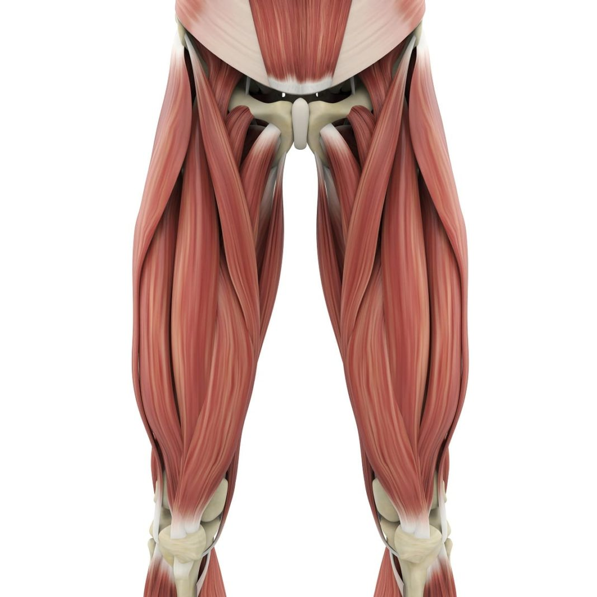
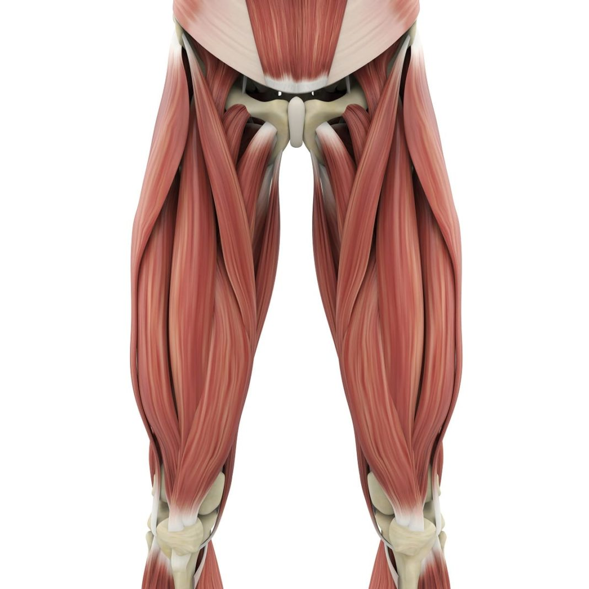

Las piernas permiten la movilidad del cuerpo, soportan peso y facilitan actividades como caminar, correr y saltar.
Volver al mapa
Las piernas permiten la movilidad del cuerpo, soportan peso y facilitan actividades como caminar, correr y saltar.
